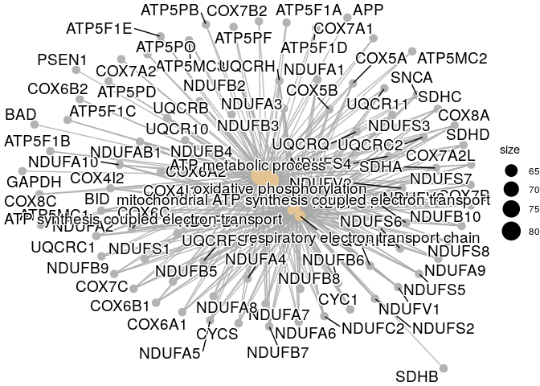
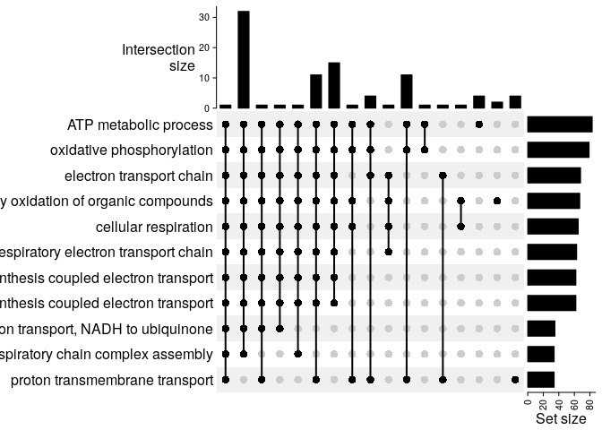
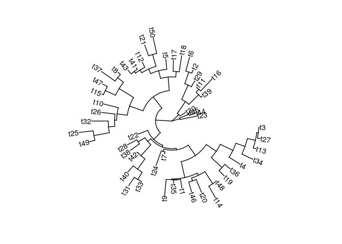

Biology-related data visualization
Contents
Gene Set Enrichment Analysis (GSEA) with clusterProfiler¶
require(tidyverse)
Let’s say we have found a set of interesting genes.
geneset_file = file.path(here::here(), "data", "raw", "geneset.txt")
genes_oi = readLines(geneset_file)
genes_oi %>% length() %>% print()
## [1] 166
genes_oi %>% head()
## [1] "ADAM10" "ADAM17" "APAF1" "APBB1" "APH1A" "APOE"
Is is enriched in some biological processes?
require(clusterProfiler)
require(org.Hs.eg.db)
result = enrichGO(genes_oi, ont="BP", keyType="SYMBOL", OrgDb=org.Hs.eg.db)
result %>% as.data.frame() %>% head()
## ID Description GeneRatio
## GO:0006119 GO:0006119 oxidative phosphorylation 75/156
## GO:0009060 GO:0009060 aerobic respiration 77/156
## GO:0046034 GO:0046034 ATP metabolic process 82/156
## GO:0045333 GO:0045333 cellular respiration 78/156
## GO:0019646 GO:0019646 aerobic electron transport chain 60/156
## GO:0042773 GO:0042773 ATP synthesis coupled electron transport 61/156
## BgRatio pvalue p.adjust qvalue
## GO:0006119 141/18722 5.925247e-125 1.667957e-121 1.118312e-121
## GO:0009060 189/18722 1.158448e-116 1.630516e-113 1.093209e-113
## GO:0046034 277/18722 3.636826e-111 3.412555e-108 2.288010e-108
## GO:0045333 230/18722 1.228519e-110 8.645704e-108 5.796671e-108
## GO:0019646 87/18722 7.658099e-109 4.311510e-106 2.890731e-106
## GO:0042773 95/18722 1.128535e-107 4.538322e-105 3.042801e-105
## geneID
## GO:0006119 ATP5F1A/ATP5F1B/ATP5F1C/ATP5F1D/ATP5F1E/ATP5PB/ATP5PD/ATP5PF/ATP5PO/BID/COX4I1/COX4I2/COX5A/COX5B/COX6A1/COX6A2/COX6B1/COX6B2/COX6C/COX7A1/COX7A2/COX7A2L/COX7B/COX7B2/COX7C/COX8A/COX8C/CYC1/CYCS/NDUFA1/NDUFA10/NDUFA2/NDUFA3/NDUFA4/NDUFA5/NDUFA6/NDUFA7/NDUFA8/NDUFA9/NDUFAB1/NDUFB1/NDUFB10/NDUFB2/NDUFB3/NDUFB4/NDUFB5/NDUFB6/NDUFB7/NDUFB8/NDUFB9/NDUFC1/NDUFC2/NDUFS1/NDUFS2/NDUFS3/NDUFS4/NDUFS5/NDUFS6/NDUFS7/NDUFS8/NDUFV1/NDUFV2/NDUFV3/SDHA/SDHC/SDHD/SNCA/UQCR10/UQCR11/UQCRB/UQCRC1/UQCRC2/UQCRH/UQCRHL/UQCRQ
## GO:0009060 ATP5F1A/ATP5F1B/ATP5F1C/ATP5F1D/ATP5F1E/ATP5PB/ATP5PD/ATP5PF/ATP5PO/BID/COX4I1/COX4I2/COX5A/COX5B/COX6A1/COX6A2/COX6B1/COX6B2/COX6C/COX7A1/COX7A2/COX7A2L/COX7B/COX7B2/COX7C/COX8A/COX8C/CYC1/CYCS/IDE/NDUFA1/NDUFA10/NDUFA2/NDUFA3/NDUFA4/NDUFA5/NDUFA6/NDUFA7/NDUFA8/NDUFA9/NDUFAB1/NDUFB1/NDUFB10/NDUFB2/NDUFB3/NDUFB4/NDUFB5/NDUFB6/NDUFB7/NDUFB8/NDUFB9/NDUFC1/NDUFC2/NDUFS1/NDUFS2/NDUFS3/NDUFS4/NDUFS5/NDUFS6/NDUFS7/NDUFS8/NDUFV1/NDUFV2/NDUFV3/SDHA/SDHB/SDHC/SDHD/SNCA/UQCR10/UQCR11/UQCRB/UQCRC1/UQCRC2/UQCRH/UQCRHL/UQCRQ
## GO:0046034 APP/ATP5F1A/ATP5F1B/ATP5F1C/ATP5F1D/ATP5F1E/ATP5MC1/ATP5MC2/ATP5MC3/ATP5PB/ATP5PD/ATP5PF/ATP5PO/BAD/BID/COX4I1/COX4I2/COX5A/COX5B/COX6A1/COX6A2/COX6B1/COX6B2/COX6C/COX7A1/COX7A2/COX7A2L/COX7B/COX7B2/COX7C/COX8A/COX8C/CYC1/CYCS/GAPDH/NDUFA1/NDUFA10/NDUFA2/NDUFA3/NDUFA4/NDUFA5/NDUFA6/NDUFA7/NDUFA8/NDUFA9/NDUFAB1/NDUFB1/NDUFB10/NDUFB2/NDUFB3/NDUFB4/NDUFB5/NDUFB6/NDUFB7/NDUFB8/NDUFB9/NDUFC1/NDUFC2/NDUFS1/NDUFS2/NDUFS3/NDUFS4/NDUFS5/NDUFS6/NDUFS7/NDUFS8/NDUFV1/NDUFV2/NDUFV3/PSEN1/SDHA/SDHC/SDHD/SNCA/UQCR10/UQCR11/UQCRB/UQCRC1/UQCRC2/UQCRH/UQCRHL/UQCRQ
## GO:0045333 ATP5F1A/ATP5F1B/ATP5F1C/ATP5F1D/ATP5F1E/ATP5PB/ATP5PD/ATP5PF/ATP5PO/BID/COX4I1/COX4I2/COX5A/COX5B/COX6A1/COX6A2/COX6B1/COX6B2/COX6C/COX7A1/COX7A2/COX7A2L/COX7B/COX7B2/COX7C/COX8A/COX8C/CYC1/CYCS/IDE/NDUFA1/NDUFA10/NDUFA2/NDUFA3/NDUFA4/NDUFA5/NDUFA6/NDUFA7/NDUFA8/NDUFA9/NDUFAB1/NDUFB1/NDUFB10/NDUFB2/NDUFB3/NDUFB4/NDUFB5/NDUFB6/NDUFB7/NDUFB8/NDUFB9/NDUFC1/NDUFC2/NDUFS1/NDUFS2/NDUFS3/NDUFS4/NDUFS5/NDUFS6/NDUFS7/NDUFS8/NDUFV1/NDUFV2/NDUFV3/SDHA/SDHB/SDHC/SDHD/SNCA/UQCR10/UQCR11/UQCRB/UQCRC1/UQCRC2/UQCRFS1/UQCRH/UQCRHL/UQCRQ
## GO:0019646 COX4I1/COX4I2/COX5A/COX5B/COX6A1/COX6A2/COX6C/COX7A1/COX7A2/COX7A2L/COX7C/COX8A/COX8C/CYC1/CYCS/NDUFA1/NDUFA10/NDUFA2/NDUFA3/NDUFA4/NDUFA5/NDUFA6/NDUFA7/NDUFA8/NDUFA9/NDUFAB1/NDUFB1/NDUFB10/NDUFB2/NDUFB3/NDUFB4/NDUFB5/NDUFB6/NDUFB7/NDUFB8/NDUFB9/NDUFC1/NDUFC2/NDUFS1/NDUFS2/NDUFS3/NDUFS4/NDUFS5/NDUFS6/NDUFS7/NDUFS8/NDUFV1/NDUFV2/NDUFV3/SDHA/SDHC/SDHD/SNCA/UQCR10/UQCR11/UQCRB/UQCRC1/UQCRH/UQCRHL/UQCRQ
## GO:0042773 BID/COX4I1/COX4I2/COX5A/COX5B/COX6A1/COX6A2/COX6C/COX7A1/COX7A2/COX7A2L/COX7C/COX8A/COX8C/CYC1/CYCS/NDUFA1/NDUFA10/NDUFA2/NDUFA3/NDUFA4/NDUFA5/NDUFA6/NDUFA7/NDUFA8/NDUFA9/NDUFAB1/NDUFB1/NDUFB10/NDUFB2/NDUFB3/NDUFB4/NDUFB5/NDUFB6/NDUFB7/NDUFB8/NDUFB9/NDUFC1/NDUFC2/NDUFS1/NDUFS2/NDUFS3/NDUFS4/NDUFS5/NDUFS6/NDUFS7/NDUFS8/NDUFV1/NDUFV2/NDUFV3/SDHA/SDHC/SDHD/SNCA/UQCR10/UQCR11/UQCRB/UQCRC1/UQCRH/UQCRHL/UQCRQ
## Count
## GO:0006119 75
## GO:0009060 77
## GO:0046034 82
## GO:0045333 78
## GO:0019646 60
## GO:0042773 61
Then, we can quickly get a glimpse of the main results.
result %>% dotplot()
result %>% cnetplot()

Now, we would like to see the overlap between the genes in the top 5 enriched categories.
require(ComplexHeatmap)
# extract lists of genes in top enriched terms
terms_oi = result %>% as.data.frame() %>% filter(p.adjust<0.05) %>% slice_max(Count, n=10)
terms_oi = terms_oi %>% group_by(Description) %>% summarize(genes=strsplit(geneID, split="/")) %>% ungroup()
terms_oi = sapply(terms_oi[["Description"]],
function(genes){ terms_oi[["genes"]][[1]]}, simplify=FALSE)
# prepare inputs
terms_oi = terms_oi %>%
list_to_matrix() %>%
make_comb_mat()
# plot
plt = terms_oi %>% UpSet()
plt

Phylogenetic trees with ggtree¶
Trees are another very common plot to visualize hierarchical patterns.
Here, we will use
ggtree
to visualize the phylogenetic relationships extracted from a multiple
sequence alignment of TP53 across mammals.
Basic tree¶
require(ggtree)
set.seed(100)
tree <- rtree(50)
ggtree(tree, layout="circular") + geom_tiplab()

Tree and multiple sequence alignment of TP53 amino acids¶
We will follow Russell J. Gray’s approach.
require(seqinr)
require(ape)
# create tree from alignment
fasta_file = file.path(here::here(), "data", "raw", "TP53-mammals-alignment-aa.fa")
aln = read.alignment(fasta_file, format = "fasta", whole.header=TRUE)
D = dist.alignment(aln)
tree = njs(D)
# plot tree with MSA
tree_plot = ggtree(tree)
msaplot(tree_plot, fasta = fasta_file) + ggtitle("tree with MSA")
Session Info¶
sessionInfo()
## R version 4.1.2 (2021-11-01)
## Platform: x86_64-pc-linux-gnu (64-bit)
## Running under: Ubuntu 18.04.6 LTS
##
## Matrix products: default
## BLAS: /usr/lib/x86_64-linux-gnu/openblas/libblas.so.3
## LAPACK: /usr/lib/x86_64-linux-gnu/libopenblasp-r0.2.20.so
##
## locale:
## [1] LC_CTYPE=en_US.UTF-8 LC_NUMERIC=C
## [3] LC_TIME=en_GB.UTF-8 LC_COLLATE=en_US.UTF-8
## [5] LC_MONETARY=en_GB.UTF-8 LC_MESSAGES=en_US.UTF-8
## [7] LC_PAPER=en_GB.UTF-8 LC_NAME=C
## [9] LC_ADDRESS=C LC_TELEPHONE=C
## [11] LC_MEASUREMENT=en_GB.UTF-8 LC_IDENTIFICATION=C
##
## attached base packages:
## [1] grid stats4 stats graphics grDevices utils datasets
## [8] methods base
##
## other attached packages:
## [1] ape_5.6-2 seqinr_4.2-8 ggtree_3.2.1
## [4] ComplexHeatmap_2.10.0 org.Hs.eg.db_3.14.0 AnnotationDbi_1.56.2
## [7] IRanges_2.28.0 S4Vectors_0.32.3 Biobase_2.54.0
## [10] BiocGenerics_0.40.0 clusterProfiler_4.2.2 forcats_0.5.1
## [13] stringr_1.4.0 dplyr_1.0.8 purrr_0.3.4
## [16] readr_2.1.2 tidyr_1.2.0 tibble_3.1.6
## [19] ggplot2_3.3.5 tidyverse_1.3.1
##
## loaded via a namespace (and not attached):
## [1] circlize_0.4.14 readxl_1.3.1 shadowtext_0.1.1
## [4] backports_1.4.1 fastmatch_1.1-3 plyr_1.8.6
## [7] igraph_1.2.11 lazyeval_0.2.2 splines_4.1.2
## [10] BiocParallel_1.28.3 GenomeInfoDb_1.30.1 digest_0.6.29
## [13] foreach_1.5.2 yulab.utils_0.0.4 htmltools_0.5.2
## [16] GOSemSim_2.20.0 viridis_0.6.2 GO.db_3.14.0
## [19] fansi_1.0.2 magrittr_2.0.2 memoise_2.0.1
## [22] cluster_2.1.2 doParallel_1.0.17 tzdb_0.2.0
## [25] Biostrings_2.62.0 graphlayouts_0.8.0 modelr_0.1.8
## [28] matrixStats_0.61.0 enrichplot_1.14.2 colorspace_2.0-3
## [31] blob_1.2.2 rvest_1.0.2 ggrepel_0.9.1
## [34] haven_2.4.3 xfun_0.30 crayon_1.5.0
## [37] RCurl_1.98-1.6 jsonlite_1.8.0 scatterpie_0.1.7
## [40] iterators_1.0.14 glue_1.6.2 polyclip_1.10-0
## [43] gtable_0.3.0 zlibbioc_1.40.0 XVector_0.34.0
## [46] GetoptLong_1.0.5 shape_1.4.6 scales_1.1.1
## [49] DOSE_3.20.1 DBI_1.1.2 Rcpp_1.0.8
## [52] viridisLite_0.4.0 clue_0.3-60 gridGraphics_0.5-1
## [55] tidytree_0.3.9 bit_4.0.4 httr_1.4.2
## [58] fgsea_1.20.0 RColorBrewer_1.1-2 ellipsis_0.3.2
## [61] pkgconfig_2.0.3 farver_2.1.0 dbplyr_2.1.1
## [64] utf8_1.2.2 here_1.0.1 ggplotify_0.1.0
## [67] tidyselect_1.1.2 labeling_0.4.2 rlang_1.0.2
## [70] reshape2_1.4.4 munsell_0.5.0 cellranger_1.1.0
## [73] tools_4.1.2 cachem_1.0.6 downloader_0.4
## [76] cli_3.2.0 generics_0.1.2 RSQLite_2.2.10
## [79] ade4_1.7-18 broom_0.7.12 evaluate_0.15
## [82] fastmap_1.1.0 yaml_2.3.5 knitr_1.37
## [85] bit64_4.0.5 fs_1.5.2 tidygraph_1.2.0
## [88] KEGGREST_1.34.0 ggraph_2.0.5 nlme_3.1-155
## [91] aplot_0.1.2 DO.db_2.9 xml2_1.3.3
## [94] compiler_4.1.2 rstudioapi_0.13 png_0.1-7
## [97] reprex_2.0.1 treeio_1.18.1 tweenr_1.0.2
## [100] stringi_1.7.6 highr_0.9 lattice_0.20-45
## [103] Matrix_1.4-0 vctrs_0.3.8 pillar_1.7.0
## [106] lifecycle_1.0.1 GlobalOptions_0.1.2 data.table_1.14.2
## [109] bitops_1.0-7 patchwork_1.1.1 qvalue_2.26.0
## [112] R6_2.5.1 gridExtra_2.3 codetools_0.2-18
## [115] MASS_7.3-55 assertthat_0.2.1 rjson_0.2.21
## [118] rprojroot_2.0.2 withr_2.5.0 GenomeInfoDbData_1.2.7
## [121] parallel_4.1.2 hms_1.1.1 ggfun_0.0.5
## [124] rmarkdown_2.12 ggforce_0.3.3 lubridate_1.8.0